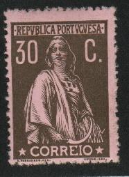

Return To Catalogue - Portugal overview
Note: on my website many of the
pictures can not be seen! They are of course present in the
catalogue;
contact me if you want to purchase the catalogue.
For stamps of Portugal issued before 1912, click here.


(reduced size)
1/4 c olive 1/2 c black 1 c green 1 c brown 1 1/2 c brown 1 1/2 c green 2 c red 2 c yellow 2 c brown 2 1/2 c lilac 3 c red 3 c blue 3 1/2 c green 4 c green 4 c orange 5 c blue 5 c brown 6 c red 6 c brown 7 1/2 c brown 7 1/2 c blue 8 c grey 8 c blue 8 c red 10 c brown 10 c red 12 c grey 12 c green 13 1/2 c blue 14 c blue on yellow 14 c violet 15 c lilac 15 c black 16 c blue 20 c brown on green 20 c brown 20 c green 20 c grey 24 c blue 25 c red 25 c grey 25 c green 30 c brown on red 30 c brown on yellow 30 c brown 32 c green 36 c red 40 c blue 40 c brown 40 c green 48 c red 50 c orange 50 c yellow 50 c brown 60 c blue 64 c blue 75 c red 80 c red 80 c violet 80 c green 90 c blue 96 c red 1 E green on blue 1 E violet 1 E blue 1 E grey 1 E red 1 E 10 brown 1 E 20 green 1 E 20 brown 1 E 25 blue 1 E 50 grey 1 E 50 violet 1 E 60 blue 2 E green 2 E lilac 2 E 40 green 3 E red 3 E 20 green 3 E 20 olive 4 E 50 yellow 4 E 50 orange 5 E green 5 E brown 10 E red 20 E blue
These stamps were first issued with perforation 15 x 14. From 1919 onwards the perforation 12 x 11 1/2 was used.
Value of the stamps |
|||
vc = very common c = common * = not so common ** = uncommon |
*** = very uncommon R = rare RR = very rare RRR = extremely rare |
||
| Value | Unused | Used | Remarks |
| 1/4 c | c | vc | |
| 1/2 c | c | vc | |
| 1 c green | * | vc | |
| 1 c brown | vc | vc | |
| 1 1/2 c brown | * | c | |
| 1 1/2 c green | c | vc | |
| 2 c red | * | c | |
| 2 c yellow | c | vc | Two shades of yellow were issued |
| 2 c brown | vc | vc | |
| 2 1/2 c | c | vc | |
| 3 c red | c | vc | |
| 3 c blue | vc | vc | Two shades of blue were issued |
| 3 1/2 c | c | vc | |
| 4 c green | c | vc | |
| 4 c orange | vc | vc | |
| 5 c blue | * | c | |
| 5 c brown | vc | vc | Two shades of brown were issued |
| 6 c red | c | vc | |
| 6 c brown | vc | vc | Three shades of brown were issued |
| 7 1/2 c brown | * | c | |
| 7 1/2 c blue | c | c | |
| 8 c grey | c | c | |
| 8 c blue | c | c | |
| 8 c red | c | c | |
| 10 c brown | c | vc | |
| 10 c red | vc | vc | |
| 12 c grey | * | * | |
| 12 c green | c | c | |
| 13 1/2 c | * | * | |
| 14 c blue on yellow | * | * | |
| 14 c violet | * | * | |
| 15 c lilac | * | c | |
| 15 c black | vc | vc | |
| 16 c | c | c | |
| 20 c brown on green | * | c | |
| 20 c brown | c | vc | Also brown on lilac |
| 20 c green | c | c | |
| 20 c grey | c | c | |
| 24 c | c | c | |
| 25 c red | c | vc | |
| 25 c grey | c | vc | Shades of grey |
| 25 c green | c | c | |
| 30 c brown on red | *** | *** | |
| 30 c brown on yellow | ** | * | |
| 30 c brown | c | c | Shades of brown |
| 32 c | * | * | |
| 36 c | c | c | |
| 40 c blue | * | * | |
| 40 c brown | c | vc | |
| 40 c green | c | vc | |
| 48 c | c | c | |
| 50 c orange | c | c | Orange on lilac: * |
| 50 c yellow | c | c | |
| 50 c brown | c | c | Two shades of brown |
| 64 c | ** | ** | |
| 75 c | * | * | |
| 80 c red | * | * | |
| 80 c violet | c | c | |
| 80 c green | c | c | |
| 90 c | ** | * | |
| 96 c | ** | ** | |
| 1 E green on blue | * | * | |
| 1 E violet | * | c | |
| 1 E blue | * | * | |
| 1 E grey | * | c | |
| 1 E red | c | c | |
| 1.10 E | * | ** | |
| 1.20 E green | * | * | |
| 1.20 E brown | ** | ** | |
| 1.25 E | c | c | |
| 1.50 E grey | ** | * | |
| 1.50 E violet | * | * | |
| 1.60 E | * | c | |
| 2 E green | * | c | Two shades of green |
| 2 E lilac | * | * | |
| 2.40 E | *** | *** | |
| 3 E | *** | *** | |
| 3.20 E green | *** | *** | |
| 3.20 E olive | * | * | |
| 4.50 E yellow | * | c | |
| 4.50 E orange | ** | ** | |
| 5 E green | ** | * | |
| 5 E brown | * | * | |
| 10 E | ** | * | Two shades of red |
| 20 E | *** | *** | |
Surcharged (1928)
4 c on 8 c red 4 c on 30 c brown 10 c on 1/4 c olive 10 c on 1/2 c black 10 c on 1 c brown 10 c on 4 c green 10 c on 4 c orange 10 c on 5 c brown 15 c on 16 c blue 15 c on 20 c brown 15 c on 20 c green 15 c on 24 c blue 15 c on 25 c red 15 c on 25 c green 16 c on 32 c green 40 c on 2 c orange 40 c on 2 c yellow 40 c on 2 c brown 40 c on 3 c blue 40 c on 50 c yellow 40 c on 60 c blue 40 c on 64 c blue 40 c on 75 c red 40 c on 80 c violet 40 c on 90 c blue 40 c on 1 E grey 40 c on 1 E 10 brown 80 c on 6 c red 80 c on 6 c brown 80 c on 48 c red 80 c on 1 E 50 violet 96 c on 1 E 20 green 96 c on 1 E 20 brown 1 E 60 on 2 E green 1 E 60 on 3 E 20 green 1 E 60 on 20 E blue
Value of the stamps |
|||
vc = very common c = common * = not so common ** = uncommon |
*** = very uncommon R = rare RR = very rare RRR = extremely rare |
||
| Value | Unused | Used | Remarks |
| 4 c on 8 c | c | c | |
| 4 c on 30 c | c | c | |
| 10 c on 1/4 c | c | c | |
| 10 c on 1/2 c | c | c | |
| 10 c on 1 c | c | c | |
| 10 c on 4 c green | c | c | |
| 10 c on 4 c orange | c | c | |
| 10 c on 5 c | c | c | |
| 15 c on 16 c | * | * | |
| 15 c on 20 c brown | *** | *** | |
| 15 c on 20 c green | c | c | |
| 15 c on 24 c | c | c | |
| 15 c on 25 c red | c | c | |
| 15 c on 25 c green | c | c | |
| 16 c on 32 c | c | c | |
| 40 c on 2 c orange | c | c | |
| 40 c on 2 c yellow | * | * | |
| 40 c on 2 c brown | c | c | |
| 40 c on 3 c | c | c | |
| 40 c on 50 c | c | c | |
| 40 c on 60 c | * | * | |
| 40 c on 65 c | * | * | |
| 40 c on 75 c | c | c | |
| 40 c on 80 c | c | c | |
| 40 c on 90 c | * | * | |
| 40 c on 1 E | c | c | |
| 40 c on 1.10 E | c | c | |
| 80 c on 6 c red | * | * | |
| 80 c on 6 c brown | * | c | |
| 80 c on 48 c | * | * | |
| 80 c on 1.50 E | * | c | |
| 96 c on 1.20 E green | * | * | |
| 96 c on 1.20 E brown | * | * | |
| 1.60 E on 2 E | * | * | |
| 1.60 E on 3.20 E | * | * | |
| 1.60 E on 20 E | * | * | |
Overprinted 'ASSISTENCIA' in red (postal tax stamp, 1912) 1 c green
Value of the stamps |
|||
vc = very common c = common * = not so common ** = uncommon |
*** = very uncommon R = rare RR = very rare RRR = extremely rare |
||
| Value | Unused | Used | Remarks |
| 1 c | c | c | |
In 1929 the values 10 c brown, 15 c black, 40 c brown, 40 c green, 96 c red and 1.60 E blue were overprinted 'Revalidado' to make them valid for postal use again (they were previously set out of use).

These stamps exist with overprint 'ACORES' to be used in Azores
1 c green 2 c brown
Value of the stamps |
|||
vc = very common c = common * = not so common ** = uncommon |
*** = very uncommon R = rare RR = very rare RRR = extremely rare |
||
| Value | Unused | Used | Remarks |
| 1 c | c | c | |
| 2 c | c | c | |
1 c brown 2 c orange 3 c bleu 4 c green 5 c brown 10 c brown 15 c black 20 c green 25 c red 30 c brown 40 c brown 50 c yellow 75 c lilac 1 E blue 1.50 E brown 2 E green
This issue was mainly issued for stamp collectors, it was only valid for 3 days. Remainders were offered in large quantities to stamp collectors.

'CAMOES EM CEUTA' 2 c blue 3 c orange 4 c grey 5 c green 6 c red 'CAMOES SALVANDO OS LUSI ADAS DO NAVFRIGIO' 8 c brown 10 c violet 15 c green 16 c lilac 20 c red Portrait of Camoes 25 c violet 30 c brown 32 c green 40 c blue 48 c brown Writing 'Lusiadas' 50 c red 64 c green 75 c violet 80 c brown 96 c red Camoes last moments 1 E blue 1.20 E brown 1.50 E red 1.60 E blue 2 E green Funeral site of Camoes 2.40 E green on blue 3 E blue on blue 3.20 E black on green 4.50 E black on yellow 10 E brown on grey Statue of Camoes 20 E violet on grey
These stamps were only valid for postage from 11 to 13 November 1924.
Some of these stamps received an overprint 'CRUZ VERMELHA Porte Franco 1927': 40 c, 48 c, 64 c, 75 c 4.50 E (overprint in red) and 10 E. They are franchise stamps for the Red Cross. In 1928 another set of franchise stamps was issued by overprinting the postage stamps with 'Porte Franco 1928' and a cross in red color: 15 c, 16 c, 25 c, 40 c, 1.20 E and 2 E. A similar overprint followed in 1929: 'Porte Franco 1929' and cross in red color on the values: 30 c, 40 c, 80 c, 1.50 E, 1.60 and 2.40 E. This was repeated in 1930: 40 c, 50 c, 96 c, 1.60 E, 3 E and 20 E, in 1931: 25 c, 32 c, 40 c, 96 c, 1.60 E and 3.20 E and in 1932: 20 c, 40 c, 48 c, 64 c, 1.60 E and 10 E. The red cross stamps of 1927 were overprinted with a large red cross and a red '1933', '1934' or '1935' on the values: 40 c, 48 c, 64 c, 75 c, 4.50 E, 10 E. In 1936 the following postage stamps were overprinted with 'Cruz Vermelha Porte Franco 1936' on 25 c, 40 c (overprint red), 50 c, 1 E and 2 E.
House of S.Miguel de Seide 2 c orange 3 c green 4 c blue 5 c red 6 c lilac 8 c brown Working room of Camilo Castello Branco 10 c blue 16 c red 20 c violet 25 c red 30 c light brown 32 c green 48 c brown Portrait of Camilo Castello Branco 15 c olive 40 c green and black 80 c brown 1.60 E blue 4 E 50 red and black Teresa de Albuquerque 50 c grey 64 c brown 75 c grey 96 c red 1 E violet 1.20 E green Mariane and J.da Cruz 1.50 E blue on blue 2 E green on green 2 E 40 red on yellow 3 E red on blue 3 E 20 black on green 10 E brown on yellow Simao Botelho 20 E black on yellow

These stamps exist with overprint 'ACORES' to be used in Azores
2 c orange 3 c blue 4 c green 5 c brown 6 c orange 15 c green 16 c blue 20 c violet 25 c red 32 c green 40 c brown 46 c red 50 c brown 64 c green 75 c red 96 c red 1 E violet 1.60 E grey 3 E lilac 4.50 E green 10 E red Surcharged 2 c on 5 c brown 2 c on 45 c red 2 c on 64 c green 3 c on 75 c red 3 c on 96 c red 3 c on 1 E violet 4 c on 1.60 E grey 4 c on 3 E lilac 6 c on 4.50 E green 6 c on 10 E red
These stamps exist with overprint 'ACORES' to be used in Azores:
2 c brown (Goncalo Mendes de Maia in battle) 3 c blue (castle) 4 c orange (design as 2 c) 5 c olive (portrait of man) 6 c brown (battle scene) 15 c brown (design as 3 c) 16 c blue (design as 5 c) 25 c grey (design as 2 c) 32 c green (design as 6 c) 40 c green (woman) 48 c red (design as 2 c) 80 c violet (design as 3 c) 96 c orange (design as 40 c) 1.60 E grey (design as 5 c) 4.50 E yellow
These stamps exist with overprint 'ACORES' to be used in Azores
2 c blue (Gualdim Paes) 3 c green (men attacking castle) 4 c red (battle scene) 5 c olive (medieval battle scene) 6 c brown (Joana de Gouveia throwing stone) 15 c black (design as 3 c) 16 c violet (design as 4 c) 25 c blue (design as 2 c) 32 c green (design as 6 c) 40 c brown (design as 5 c) 50 c orange (design as 4 c) 80 c grey (design as 3 c) 96 c red (design as 6 c) 1 E brown (design as 5 c) 1.60 E blue (design as 2 c) 4.50 E yellow (Matias de Aberqueque)
These stamps exist with overprint 'ACORES' to be used in Azores
1$60 on 5 c brown

4 c light brown 5 c brown 6 c grey 10 c violet 15 c black 16 c blue 25 c green 25 c blue (1934?) 30 c green (1933) 40 c orange 48 c brown 50 c brown 75 c red 80 c green 95 c red 1 E lilac 1.20 E olive 1.25 E blue 1.60 E blue 1.75 E blue 2 E violet 4.50 E orange 5 E light green
15 c lilac (birthroom of St.Antonio) 25 c green on green (baptise room of St.Antonio) 40 c brown on yellow (cathedral of Lisbon) 75 c red (statue of St.Antonio) 1.25 E grey (church in Coimbra) 4.50 E violet (grave of St.Antonio) Surcharged (1933) '15 c' on 40 brown on yellow '40 c' on 15 c lilac '40 c' on 25 c green on green '40 c' on 75 c red '40 c' on 1.25 E grey '40 c' on 4.50 E violet
15 c black 25 c green and black 40 c red 75 c red 1.25 E blue 4.50 E lilac and grey Surcharged (1933) 15 c on 40 c red 40 c on 15 c black 40 c on 45 c green and black 40 c on 75 c red 40 c on 1.25 E blue 40 c on 4.50 E lilac and grey
So-called 'Caravelle' issue (1943); I've seen the following
values: 5 c black, 10 c brown, 15 c grey, 20 c violet, 30 c
brown, 35 c green, 50 c violet, 1 E red, 1.75 E blue, 1.80 E
orange, 2 E lilac, 2.50 E red, 3.50 E blue, 5 E orange, 6E light
green, 10 E grey, 15 E green, 20 E brown and 50 E red.
Other permanent design:

(Knight riding on a horse)